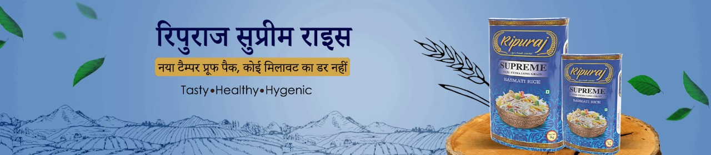
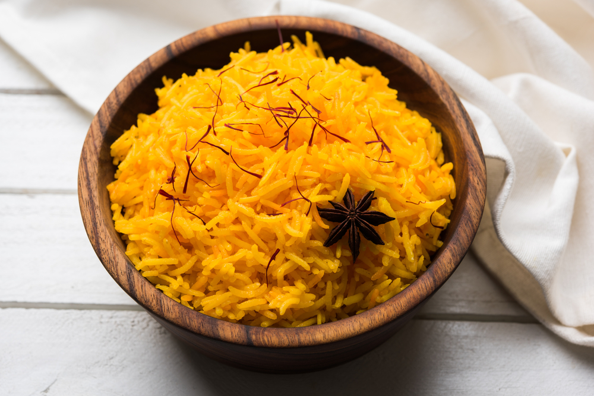
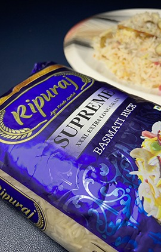

Welcome to Ripuraj Agro – Premium Quality Jeera Rice & Basmati Rice
info@ripurajagro.co.in
Mon - Sat 8:00 - 6:30, Sunday - CLOSED
Home
About
About Company
Vision & Mission
Founder Message
Infrastructure
Products
Careers
Contact
Call Anytime
+91 990 5555 666


Ingredients Used
1.5 CUPS RIPURAJ BASMATI RICE
2 TO 3 GENEROUS PINCH OF SAFFRON OR KESAR
¾ TSP CARAWAY SEEDS/SHAH JEERA
2 GREEN CARDAMOM
1 BAY LEAF/TEJ PATTA
1 INCH CINNAMON
2 CLOVES
1 STRAND OF MACE
3 OR 3¼ CUPS WATER
A PINCH OF TURMERIC (OPTIONAL)
1.5 TBSP OIL OR GHEE OR UNSALTED BUTTER
A FEW CORIANDER OR MINT LEAVES AND FEW DRY FRUITS
FOR GARNISH (OPTIONAL)
SALT AS REQUIRED

Steps
RINSE THE RICE FOR 3-4 TIMES IN WATER.
SOAK THE RICE FOR 20-30 MINS IN WATER.
DRAIN THE WATER AND KEEP THE RICE ASIDE.
HEAT OIL OR GHEE OR UNSALTED BUTTER IN A DEEP PAN OR POT.
ADD ALL THE WHOLE SPICES INCLUDING SHAHI JEERA.
FRY TILL THE OIL BECOMES FRAGRANT.
ADD SOAKED RICE.
STIR FOR 1-2 MINUTES.
CRUSH THE SAFFRON WITH YOUR FINGERS OR IN A MORTAR-PESTLE AND ADD THESE TO THE RICE.
ADD TURMERIC POWDER NOW IF YOU PLAN TO ADD IT. Stir
ADD WATER ALONG WITH SALT.
COVER THE PAN TIGHTLY AND LET THE RICE COOK TILL THE GRAINS BECOME SEPARATELY COOKED AND ABSORB ALL THE WATER.
DO CHECK THE RICE FOR A COUPLE OF TIMES WHEN ITS COOKING.
ONCE DONE, FLUFF GENTLY WITH A FORK.
SERVE THE SAFFRON RICE GARNISHED WITH CORIANDER OR MINT LEAVES WITH ANY DAL OR INDIAN CURRY.
info@ripurajagro.co.in
+91 990 5555 666